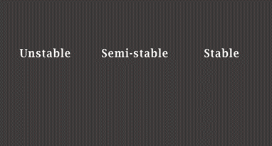

By
Bob BourgeoisBob is a former District Fire Chief (FF 40 yrs), former LLC owner (public safety case studies), BSME Columbia Univ
With input from
Joe MaloneyJoe is a former District Fire Chief (FF 32 yrs, 19 as District Chief), 1st draft 13Apr21 Latest rev 14Jul24 Feedback/Qs roomfiresetc@gmail.com
Fig. 1-1 Wet the burning fuel surfaces
Room fires are a good starting point to revisit the basics of fighting fire with water (first of six topics). Although easy to understand, they have in recent decades been misunderstood in some costly ways.
Killing a fully-involved room fire is mainly about wetting the burning fuel surfaces — choking off the supply of fuel gases by stopping the heat-driven reactions that produce them (pyrolysis). No pyrolysis gases means no flames.
Killing the fire is not about absorbing all of the fire's heat
(HRR).Heat Release Rate
What matters is the surface area that water is hitting at the moment. If that area goes out and does not reignite immediately, the stream can make progress by wetting more fuel. If you can make progress, you can put the fire out. If most burning fuel surfaces can be painted with water, knockdown happens in seconds.
Fig. 1-2 Progress instability
Two progress-related concepts go a little deeper:
The first is progress instability
— how quickly the fire could grow back. If you imagine an interruption in water flow: stable progress will persist after the water stops; unstable progress can quickly be lost (fire flashes back).
Water's progress will be stable on burning leaves and unstable on gasoline pool fires. Well-involved room fires live in between. Semi-stable progress persists for a short time.
The other key concept is that, once you start making semi-stable progress against a room fire, the required flow rate decreases rapidly.
Water puts fire out by three mechanisms:
Fuel surface cooling — heat transfer at
burning fuel surfacesThe burning fuel surfaces are sometimes called the "base" or "seat" of the fire but both terms can be misused or misinterpretated so I avoid them.
(mostly when water hits them.)
Steam inerting — displacement/dilution of air and fuel gases by steam.
Gas cooling — heat transfer while water droplets are in flight.
All three occur in most scenarios, but fuel surface cooling has the efficiency and progress stability to be the primary mechanism by far. Stopping pyrolysis of fuels is like stopping the flow of gas at a gas-fed fire.
The minimum initial flow that will make semi-stable progress and darken down a room fire is situation-dependant, but it is the flow required to wet burning fuel surfaces. Progress becomes more stable as more surface area becomes wet and stops pyrolizing.
Etc
These concepts also apply to fires in the voids of buildings but problems with detection and access often make it hard to wet all the burning surfaces. Success in those cases comes from finding the fire and positioning the nozzle well—not from higher flow rates.
Fires on the outside of buildings (porches etc) tend to be fuel-controlled and have exposed fuel surfaces. It is easy to make semi-stable and stable progress. Modest flow rates achieve surprisingly good results.
Fires spreading through
large areas,There is no sharp dividing line between room fires and large area fires. We take 3,000 to 3,500 cubic feet to be transitional.
as in many commercial occupancies, may feature a race between the firefighters’ rate of progress and the fire’s rate of spread. Higher flow rates and/or more reach may be required.
During post-fire reviews, remember that FFs who hit flame without hitting the burning fuel surfaces might misread the problem as not enough GPM.
Questions
How should people calculate the initial flow rates required to darken down room fires?
The Iowa formula (lwh/100) is based on testing and gives a reasonable estimate. In practice, it’s very easy to deliver a lot more water than you need. Don’t overthink it.
If you can't resist overthinking, remember that you don't have to absorb all the heat being produced in the room. Those calculations are incorrect. The tipping point is when you can wet an area of burning fuel and the radiant feedback does not immediately reignite it. How big that area needs to be is what determines the GPM that you need.
Did the introduction of plastic products (starting in the 1950s) increase the initial GPM required to knock down well-involved room fires?
Not really.
The fuels that might need more GPM are those that affect progress stability. Gasoline is an example. Gasoline continues to produce flammable vapors after water is applied because its flash point is much lower than the temperature of the water. Fire may be able to flash back over an area already doused.
Though parts of the room with no gasoline will darken down as usual, you might initially need a little more water to start bringing stability to your progress. (The difference isn’t always noticeable because common flow rates are so much higher than minimums.)
Plastics, in contrast, stop making fuel gases when wet. They readily allow semi-stable and stable progress—just like paper, wood, cloth, paint, etc.
It is worth noting that synthetics produce more airborne fuel
(AF)In this context, airborne fuel includes pyrolosis gases and partially-burned fuels. See Flame Length etc for a more general discussion.
and change radiative feedback by making more soot. Both effects are significant
tactically,In addition to the effects detailed in Flame Length etc, excess AF increases the probability of smoke explosions and other rapid intensifications, sometimes remote from the obvious fire.
but have only a tiny effect on required initial flow.
Are “direct attack” and “indirect attack” useful terms?
The usefulness of these terms is limited by their varying definitions. I learned it as:
A “direct attack” kills the fire mostly by wetting burning fuel surfaces. This includes water that hits the ceiling before it wets some other surface.
An “indirect attack” knocks the fire mostly by making steam that smothers the fire. The production of fuel gases then tapers off as the fuel surfaces cool by transferring heat to the enviroment.
Using that definition, when is an indirect attack warranted?
In a few situations that combine:
access difficulty or some other reason to avoid a direct attack
enough confinement to hold the steam while the fuels cool
high levels of FF skill and coordination.
(FFs should be ready for sudden changes during an indirect attack. Progress may be unstable.)
Put water on the stuff that's burning. If the fire doesn't go out, it's probably because you didn't hit all the stuff.
A building fire isn't out until the fuels are cool and the atmosphere is vented.